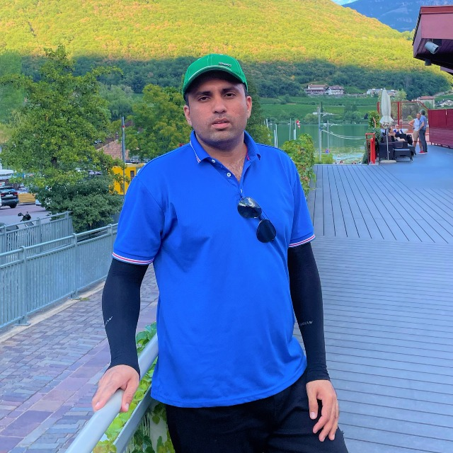

|  |
Zeeshan Hameed Address: Via Brennero, 8, Bolzano , Italy
|
| Time Period | University / Degree | Research Topic | 2021-Present | University of Bolzano, Bolzano, Italy Ph.D. in Advanced System Engineering |
Reinforcement Learning based PSO for Decentralized Edge Cloud Environment |
|---|---|---|
| 2018-2020 | Chongqing University, China Lab of Artificial Intelligent and Health Informatics Masters in Electronics and Communication Engineering |
Data Analysis (Algorithms for dimensionality reduction), Pattern recognition |
| 2012-2016 | The University of LANCASTER, UK Bachelor of Science in Electrical (Telecommunication) Engineering |
Cognitive Radio Networks |
I worked as a Radio Frequency Engineer in the RF department. My primary responsibility was to resolve customer complaints and optimization issues when RF equipment was swapped from Ericson to ZTE. I was bond to resolve the following issues
| English | ⭐⭐⭐⭐⭐ |
| Chinese | ⭐⭐ |
| Italian | ⭐ |